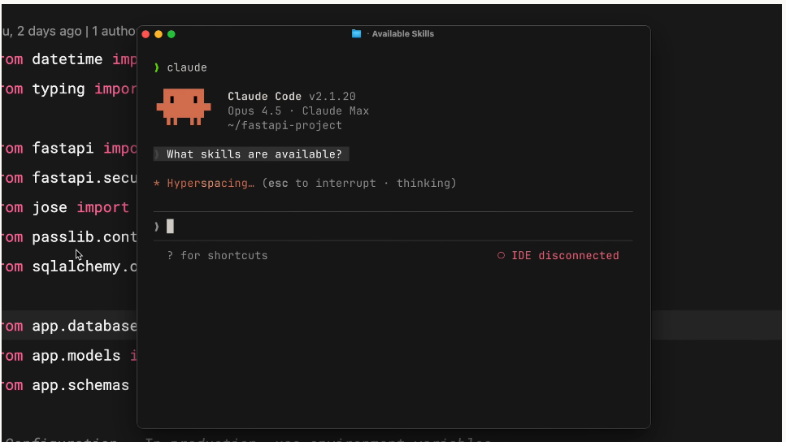
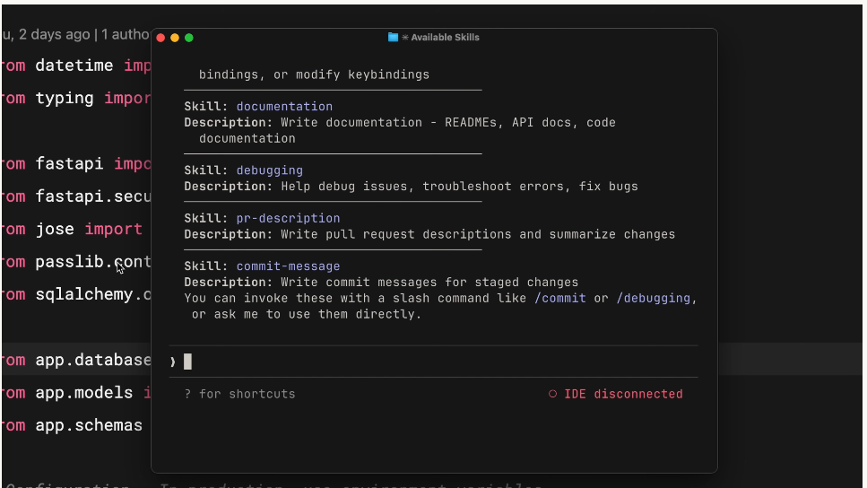
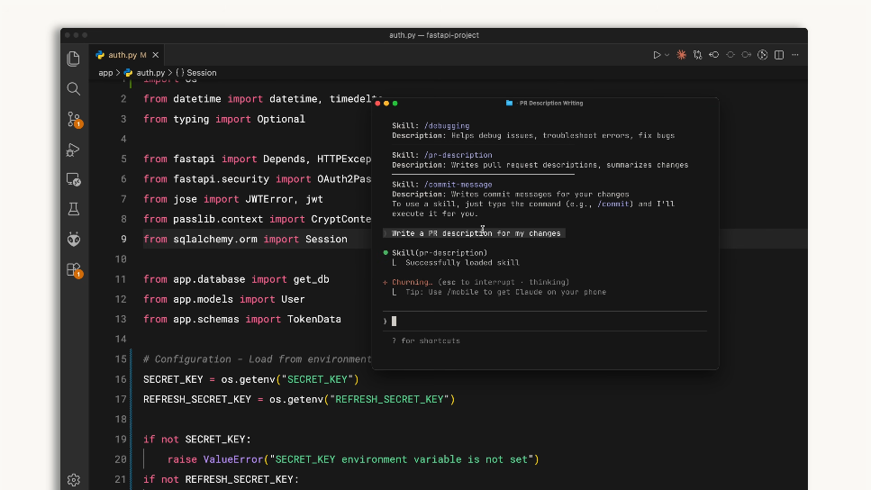

claude-code 101
2026年04月28日
~/.claude/skills/ への書き込み権限regmonkey_index:
title_fontsize: 1.2em
bullet_fontsize: 0.85em
children:
- title: 1. Skill 作成の実践
description:
- ディレクトリ作成 → <strong>SKILL.md</strong> 編集 → 再起動の3ステップで完成
- frontmatter（<strong>name・description</strong>）と本文（指示書）の二層構造
width: [38, 62]
- title: 2. 動作確認
description:
- 自然文「What skills are available?」で <strong>登録一覧を取得</strong>
- 実依頼を投げ，IDE に Skill 名と説明が出れば <strong>auto-match 成功</strong>
- 一覧に出ない・発火しない場合は <strong>frontmatter 構文・再起動忘れ</strong>を疑う
width: [38, 62]
- title: 3. ロードとマッチング
description:
- スキャン対象は Enterprise・Personal・Project・Plugins の <strong>4ヶ所</strong>
- 起動時は <strong>name + description のみ先読み</strong>，本文は遅延ロード
- 依頼との <strong>意味マッチで発火</strong> → 確認プロンプト → 本文展開
width: [38, 62]
- title: 4. 運用とTips
description:
- 更新は SKILL.md 編集，削除はディレクトリ削除，<strong>どちらも再起動が必須</strong>
- 誤発火・空振りを観察して <strong>description を磨き続ける</strong>運用が鍵
- <strong>成果物・タスク・ドメイン</strong>の3観点で Skill を切り分ける
width: [38, 62]Skill 作成の実践
動作確認
ロード & マッチング
運用とTips
Step 1
ディレクトリを作成
~/.claude/skills/<skill-name>/name と一致させるmkdir -p ~/.claude/skills/pr-descriptionStep 2
SKILL.md を作成
name と description を記述--- 以降に Claude への指示書本文Step 3
Claude Code を再起動
SKILL.md は「frontmatter = 看板」「本文 = 中身」の二層構造name は識別子，description がマッチングキー，本文が指示書
--- で囲み，name（kebab-case1）と description（自然文）を必ず書く最小構造の例
---
name: pr-description
description: Writes pull request descriptions.
Use when creating a PR, writing a PR, or when
the user asks to summarize changes for a pull
request.
---
When writing a PR description:
1. Run `git diff main...HEAD` to see all changes
2. Write a description following this format:
## What
One sentence explaining what this PR does.
## Why
Brief context on why this change is needed.
## Changes
- Bullet points of specific changes madeフィールドの役割
| フィールド | 役割 | 書き方のコツ |
|---|---|---|
name |
識別子 | kebab-case，ディレクトリ名と一致 |
description |
マッチング | “Use when …” を含め具体的に |
| 本文 | 指示書 | 手順・出力テンプレを明示 |
コツ
Skill 作成の実践
動作確認
ロード & マッチング
運用とTips
作成直後はまず一覧で名前が出るかを見る．これで frontmatter 構文ミスを早期検知できる
① 自然文で問い合わせる

What skills are available? と聞くだけ② 一覧出力を確認

Skill: <name> と Description: ... が並ぶpr-description が含まれているかを目視Skill 名を呼ばずとも．description の意味マッチで Claude が選定し，ログ表示される

起動の流れ
Write a PR description for my changes.description と意味マッチここがデバッグの勘所
description が効いている証拠Skill 作成の実践
動作確認
ロード & マッチング
運用とTips
起動時：軽量メタロード
managed-settings.json（Enterprise）~/.claude/skills/（Personal）<repo>/.claude/skills/（Project）<repo>/.claude-plugin/plugin.json（Plugins）name と description のみを読むリクエスト時：意味マッチ + 確認
REMARKS
| 順位 | 種別 | 配置場所 | 役割 |
|---|---|---|---|
| 1st | Enterprise | managed-settings.json |
組織が強制する標準（全社統一のレビュー基準など） |
| 2nd | Personal | ~/.claude/skills/ |
個人の作法を全プロジェクトに適用 |
| 3rd | Project | <repo>/.claude/skills/ |
リポジトリ同梱でチームに配布 |
| 4th | Plugins | <repo>/.claude-plugin/plugin.json |
インストールしたプラグイン由来 |
衝突を避ける命名のコツ
review）は避けるfrontend-review，backend-review<team>-<task> の prefix も有効この順序の意図
Skill 作成の実践
動作確認
ロード & マッチング
運用とTips
SKILL.md 更新・削除は，どちらもセッション再起動が必須ファイル操作はシンプルだが「再起動忘れ」が最頻出のハマりポイント
SKILL.md を編集して Claude Code を再起動よくある事故
name の不一致description が抽象的すぎ改善サイクル
漠然とした description は誤発火・空振りの元．具体的なキーワードと発動条件をセットで書く
Use when ... は便利なテンプレ弱い description（誤発火しやすい）
Helps with docs.
強い description（誤発火しにくい）
Writes pull request descriptions. Use when creating a PR or summarizing changes for review.
「何を作るか」「どう動くか」「どの領域か」のどれを軸にするかで Skill の粒度と再利用性が決まる
成果物単位
タスク単位
ドメイン単位
一つの巨大 Skill に詰め込むより，観点ごとに分けるほうが再利用性も保守性も上がる
3層に分解した例：規制対象プロダクトのリリース前チェック
Regmonkey Presentation. ©Ryo Nakagami. All rights reserved.